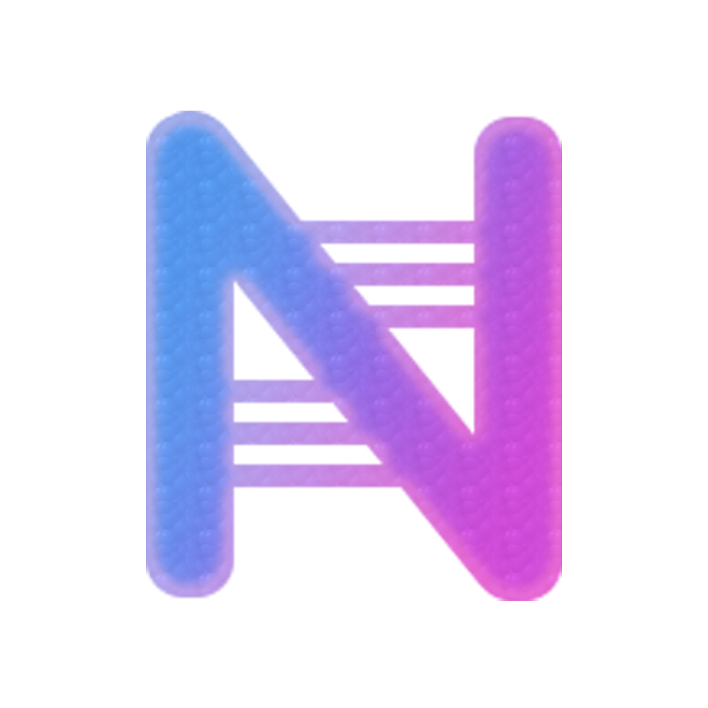

一、Nexitally 核心技术架构与特色剖析
很多用户好奇：为什么 Nexitally 能够维持数年如一日的高可用性？其核心秘密在于其重资产的基础网络建设：
1. 独家自研底层通信协议与隧道技术
不同于普通机场直接使用标准 Shadowsocks 或 Trojan 协议，Nexitally 自研了高性能隧道协议。通过对传输数据包的多层混淆与特征弱化，使得 GFW 的深度包检测（DPI）系统完全无法识别其科学上网流量，从物理底层彻底免受探测阻断与主动干扰。
2. 中美/中港企业级金融物理专线
Nexitally 接入了电信、联通、移动多线 BGP 核心机房，并通过企业级物理海底光缆与内网点对点通信直通境外落地数据中心。数据传输全程不经过 GFW 公网国际出口，晚高峰 20:00 - 23:00 期间的丢包率严格控制在 0.05% 以内，网络抖动（Jitter）小于 3ms。
3. 智能边缘接入与 Anycast 动态路由分流
系统会根据用户当前的物理地理位置与本地宽带运营商（电信、移动、联通或教育网），毫秒级自动匹配延时最低的边缘接入节点，确保境内第一公里直达骨干内网，避免因运营商跨网互联导致的高丢包与高延迟。
二、晚高峰网速与流媒体 / AI 生产力实测
在 1000Mbps 家庭联通千兆宽带环境下，我们于晚高峰 21:30 对 Nexitally 主力节点进行了测速取样：
流媒体与 AI 工具解锁：全线节点均采购纯净的原生住宅或高质量数据中心 IP，Netflix、Disney+、Max 跨区片源完美解锁。在访问 ChatGPT、Claude、Google Gemini 等强风控 AI 工具时，不会出现 Cloudflare 人机频繁验证或 1020 阻断，体验极佳。
三、Nexitally 核心资费套餐对比
Nexitally 的产品规划主打专业级品质，主要分为以下主力套餐：
- Smart Access（基础服务）：月付约 ¥74.55 起（半年付约 ¥63/月，年付折合约 ¥54.6/月），含 200GB/31天独立高速流量，支持 2 台设备同时在线，支持最高 2000Mbps 极速专线。
- Basic Service（大流量版）：月付约 ¥123.33 起（年付折合约 ¥96.46/月），含 500GB/31天独立流量，适合高强度 4K 追剧与海外数据传输。
- Premium Access（附加服务）：提供中美金融专线，日本、美国、韩国 Anycast 网络矩阵，适合对极致延迟有苛刻要求的跨国金融业务。
四、综合评价与适用人群建议
优缺点客观小结
优点：自建独家隧道，网络稳定性位居全行业顶尖；全专线晚高峰 0 丢包；原生住宅 IP 全解锁；支持一键导入主流客户端。
⚠️ 考量点：起步价格高于常规便宜机场；注重品质而非单纯低价走量。
结论：如果您平时主要用来进行跨境商业办公、科研论文检索、外服联机对战以及高要求 AI 交互，厌倦了便宜机场频繁断流和修节点，那么 Nexitally 是当之无愧的“终极退烧之选”。